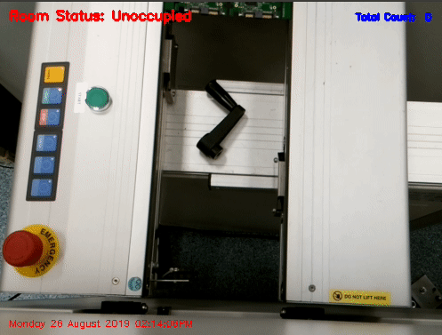

EXPERIENCE
Home | Education | Experience | CV | Contact
| Work Experience |
| Junior Test Engineer, Wintec Industries |
| - Build a File Transfer Protocol (FTP) Server for productions lines for transmitting the log files from the machines - Write C++/CLI script to build a user-friendly Graphical User Interface (GUI) for the operators to use FTP - Use Raspberry Pi 4 and Pi camera using Open CV and Moving-Object Surveillance approach in Python to create a tool for calculating the productivity of Printed Circuit Board (PCB) and monitoring the production line. |
| Research Experience |
| Master Research: Improved Visualization of Fiber-based Fluorescence Lifetime Imaging in a Clinical Setting |
| - Apply algorithms to visualize fluorescence lifetime imaging (FLIm) data - Build a Graphical User Interface (GUI) for data visualization using MATLAB - Investigate Real-time Visualization approach for clinical application |
| Coursework Project: Improvement in Reinforcement Learning for Frogger Game |
| - Regenerate the arcade game “Frogger game” using Python with PyGame - Apply the Q-learning algorithm to Frogger game and analyze its performance - Exploit nearest neighbor interpolation approach to improve the performance of Q-learning for Frogger game |
| Coursework Project: Human Following Robot Based on Reactive Algorithm for Safe Navigation |
| - Build a simulation environment in MATLAB/Simulink - Utilize Simulink toolbox and MATLAB function to simulate a human following robot (Pionner 3-DX) - Apply Biological obstacle-avoidance algorithm to robot and its sensors and analyze the performance of the robot |
|  | |
|